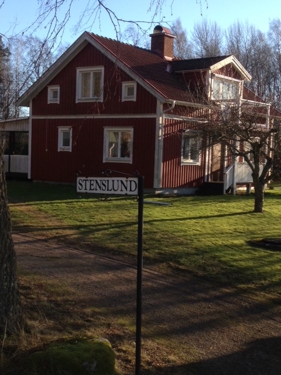

Vem är jag?
Mitt namn är Jenny Anna Lovisa Stenslund. Mitt tilltalsnamn Jenny valde mina föräldrar utan några kopplingar till släktens historia. Anna och Lovisa däremot är båda släktnamn från både mammas och pappas sida. Mitt efternamn tog min farmor för många år sedan eftersom hennes barndomshem hette Stenslund. Därmed är min släkt på pappas sida de enda i Sverige med detta unika namn. Mitt namn bär därför mycket tradition och historia med sig samtidigt som det tillför något nytt.
Min farmors barndomshem Stenslund.
Jag är 26 år gammal och bor i min egna lilla lägenhet i min hemstad som ligger mig varmt om hjärtat. Jag är en nyfiken person som ständigt vill lära mig nya saker och förstå på djupet hur saker och ting fungerar. Samtidigt är jag försiktig och kastar mig inte gärna ut på okänt vatten utan en analys av situationen. Jag är noggrann och ställer höga krav på mig själv. Jag är även väldigt empatisk och tycker mycket om barn vilket har gjort att jag lekt och varit barnvakt åt många av släkt och vänners barn genom åren.
Efter att jag tog studenten från Naturvetenskapliga programmet ville jag ta en paus från skolan och studierna. Jag längtade efter att se och uppleva världen. Efter en sommar med jobb på Ica bar det därför av till Aten i Grekland där jag bodde i ett halvår och arbetade som Au-pair. Därefter var jag hemma och arbetade på Ica och vikarierade i grundskolan.
Hösten 2011 började jag studera Datateknik vid LTH eftersom jag alltid varit intresserad av datorer och teknik samtidigt som mitt favoritämne i skolan var matematik. Jag tänkte att Datateknik skulle ge mig möjlighet att utveckla mina intressen och talanger. Efter ett halvår insåg jag dock att högskolematematik inte var något för mig men att jag älskade programmering. Jag avbröt mina studier och åkte till USA som Au-pair för att uppleva världen igen samtidigt som jag fick tid att tänka över vilken utbildning jag skulle byta till när jag kom tillbaka. Tiden i Washington DC gav mig många nya insikter om mig själv samtidigt som jag lärde känna många nya personer med olika ursprung och kulturella skillnader. Några av oss kom att bli vänner för livet. Det hann bli några resor under tiden i USA och jag fick se flera spännande storstäder och delstater.
Tillbaka i Sverige igen började jag hösten 2013 studera Systemvetenskap i Göteborg och efter tre år är jag nu färdig.